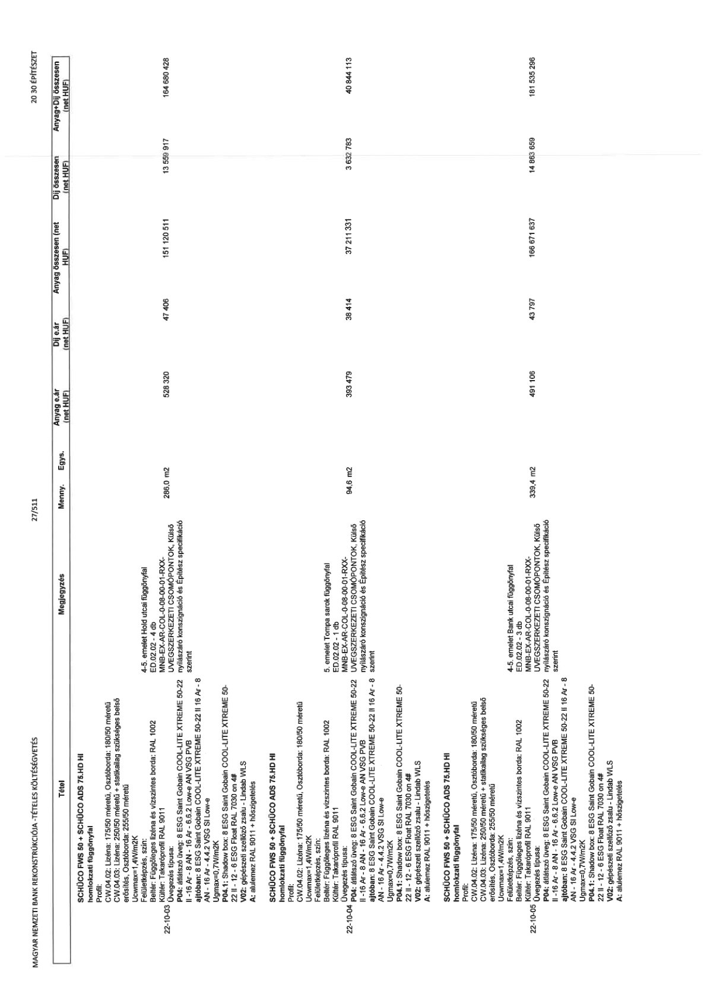

| Tétel | Megjegyzés | Menny. | Egys. | Anyag e.ár (net HUF) | Díj e.ár (net HUF) | Anyag összesen (net HUF) | Díj összesen (net HUF) | Anyag+Díj összesen (net HUF) |
|---|---|---|---|---|---|---|---|---|
| SCHÜCO FWS 50 + SCHÜCO ADS 75.HD HI\nhomlokzati függönyfal\nCW.04.02: Lizéna: 175/50 méretű, Osztóborda: 180/50 méretű\nCW.04.03: Lizéna: 250/50 méretű + statikailag szükséges belső\nerősítés, Osztóborda: 255/50 méretű\nProfil: Hőszigetelt alumínium\nFelületképzés, szín:\nBeltér: Függőleges lizéna és vízszintes borda: RAL 1002\nKültér: Takaróprofil RAL 9011\nÜvegezés típusa:\nP04: átlátszó üveg: 8 ESG Saint Gobain COOL-LITE XTREME 50-22\nII - 16 Ar - 8 AN - 16 Ar - 6.6.2 Low-e AN VSG PVB\najtóban: 8 ESG Saint Gobain COOL-LITE XTREME 50-22 II 16 Ar - 8\nAN - 16 Ar - 4.4.2 VSG SI Low-e\nUgmax=0,7W/m2K\nP04.1: Shadow box: 8 ESG Saint Gobain COOL-LITE XTREME 50-\n22 II - 12 - 6 ESG Float RAL 7030 on 4#\nV02: gépészeti szellőző zsalu - Lindab WLS\nA: alulemez RAL 9011 + hőszigetelés | 4-5. emelet Hold utcai függönyfal\nED.01.02 - 4 db\nMNB-EX-AR-COL-0-08-00-01-RXX-\nÜVEGSZERKEZETI CSOMÓPONTOK. Külső\nnyílászáró konszignáció és Építész specifikáció\nszerint | 286,0 | m2 | 528 320 | 47 408 | 151 120 511 | 13 559 917 | 164 680 428 |
| SCHÜCO FWS 50 + SCHÜCO ADS 75.HD HI\nhomlokzati függönyfal\nProfil:\nCW.04.02: Lizéna: 175/50 méretű, Osztóborda: 180/50 méretű\nUcwmax=1,4W/m2K\nFelületképzés, szín:\nBeltér: Függőleges lizéna és vízszintes borda: RAL 1002\nKültér: Takaróprofil RAL 9011\nÜvegezés típusa:\nP04: átlátszó üveg: 8 ESG Saint Gobain COOL-LITE XTREME 50-22\nII - 16 Ar - 8 AN - 16 Ar - 6.6.2 Low-e AN VSG PVB\najtóban: 8 ESG Saint Gobain COOL-LITE XTREME 50-22 II 16 Ar - 8\nAN - 16 Ar - 4.4.2 VSG SI Low-e\nUgmax=0,7W/m2K\nP04.1: Shadow box: 8 ESG Saint Gobain COOL-LITE XTREME 50-\n22 II - 12 - 6 ESG Float RAL 7030 on 4#\nV02: gépészeti szellőző zsalu - Lindab WLS\nA: alulemez RAL 9011 + hőszigetelés | 5. emelet Tompa sarok függönyfal\nMNB-EX-AR-COL-0-08-00-01-RXX-\nÜVEGSZERKEZETI CSOMÓPONTOK. Külső\nnyílászáró konszignáció és Építész specifikáció\nszerint | 94,6 | m2 | 393 479 | 38 414 | 37 211 331 | 3 632 783 | 40 844 113 |
| SCHÜCO FWS 50 + SCHÜCO ADS 75.HD HI\nhomlokzati függönyfal\nProfil:\nCW.04.02: Lizéna: 175/50 méretű, Osztóborda: 180/50 méretű\nCW.04.03: Lizéna: 250/50 méretű + statikailag szükséges belső\nerősítés, Osztóborda: 255/50 méretű\nUcwmax=1,4W/m2K\nFelületképzés, szín:\nKültér: Takaróprofil RAL 9011\nÜvegezés típusa:\nP04: átlátszó üveg: 8 ESG Saint Gobain COOL-LITE XTREME 50-22\nII - 16 Ar - 8 AN - 16 Ar - 6.6.2 Low-e AN VSG PVB\najtóban: 8 ESG Saint Gobain COOL-LITE XTREME 50-22 II 16 Ar - 8\nAN - 16 Ar - 4.4.2 VSG SI Low-e\nUgmax=0,7W/m2K\nP04.1: Shadow box: 8 ESG Saint Gobain COOL-LITE XTREME 50-\n22 II - 12 - 6 ESG Float RAL 7030 on 4#\nV02: gépészeti szellőző zsalu - Lindab WLS\nA: alulemez RAL 9011 + hőszigetelés | 4-5. emelet Bank utcai függönyfal\nED.02.02 - 3 db\nMNB-EX-AR-COL-0-08-00-01-RXX-\nÜVEGSZERKEZETI CSOMÓPONTOK. Külső\nnyílászáró konszignáció és Építész specifikáció\nszerint | 339,4 | m2 | 491 106 | 43 797 | 166 671 637 | 14 863 659 | 181 535 296 |
